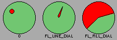

Class Hierarchy
Fl_Valuator
|
+----Fl_Dial
Include Files
#include <FL/Fl_Dial.H>
Description
The Fl_Dial widget provides a circular dial to control a
single floating point value.

Methods
Creates a new Fl_Dial widget using the given position, size,
and label string. The default type is FL_NORMAL_DIAL.
Destroys the valuator.
Sets the angles used for the minimum and maximum values. The default
values are 45 and 315 (0 degrees is straight down and the angles
progress clockwise). Normally angle1 is less than angle2, but if you
reverse them the dial moves counter-clockwise.
Sets the type of the dial to:
- FL_NORMAL_DIAL - Draws a normal dial with a knob.
- FL_LINE_DIAL - Draws a dial with a line.
- FL_FILL_DIAL - Draws a dial with a filled arc.